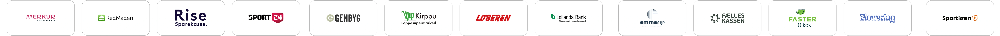
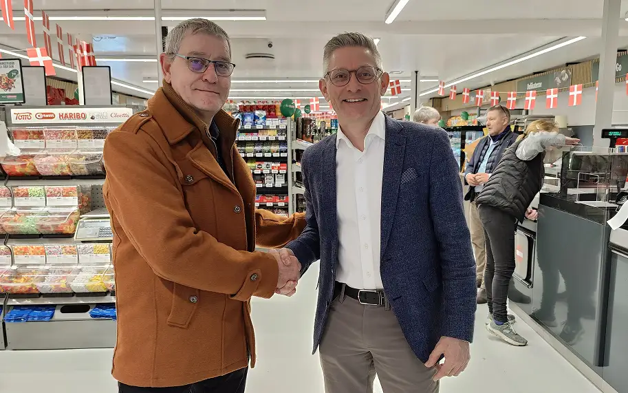

Øremærket arbejder sammen med Den Danske Naturfond
Hvad er Dankort Øremærket?
Lokale
Danmark
- Din købmand betaler færre afgifter
- Dankort er kun dansk
- Har i været der for danskerene siden 1983
Sikrere
Danmark
- Dankort virker når alt andet fejler
- Uafhægigt af internationale banker
- 0 sager af forfalskning efter tilføjelse af chip
Grønnere
Danmark
- Hver transaktion doneres der 1 øre
- I sammarbejde med Den Danske Naturfond
- Vi donérer som minimum 10.000.000kr
Dankort Øremærket er et initiativ, hvor der automatisk doneres 1 øre til Den Danske Naturfond, hver gang du betaler med dit Dankort. Det koster ikke dig ekstra, og det gælder alle betalinger, uanset om du bruger det fysiske kort eller mobilen.
Estimeret donation indtil videre
1231142
Det svarer til
283.252 m²
naturområde
Eller ca. størrelsen på
40
fodboldbaner
eller
56.651
4-personers telte


Det lokale alternativ
Dankort Øremærket er et initiativ, hvor der automatisk doneres 1 øre til Den Danske Naturfond, hver gang du betaler med dit Dankort. Derud over donere både din bank og buttikken du handler i, 1 øre til Den Danske Naturfond.
Læs mere
Skaber større sikkerhed
Med Dankort er du og dine køb i trykke hænder - både i butikkerne og på nettet. Dankort har med sine sikkerhedsfunktioner og samarbejde med banker og butikker, skabt et trygt betalingsmiljø for alle danskere.
Læs mere
I medgang og modgang
Dit fysiske Dankort virker ved betalingsnedbrud, ved at gennemføre betalinger offline, som godkendes når systemet er oppe igen.
Læs mere